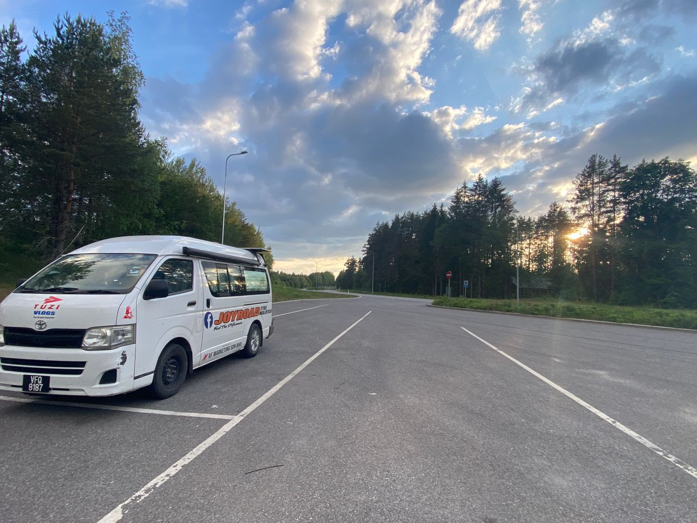

Real Story · 中文
7/6 — one day opened Latvia and Estonia.
7 June 2024，我从 Lithuania 开进 Latvia。 同一天，我又从 Latvia 开进 Estonia。 一天里面打开两个国家。
这一天不是轻松 sightseeing。 这是为了 Russia e-visa 指定进出关口， 一路往北调整路线。 前面有 Latvia、Estonia， 后面是 Russia route 的不确定。
Misso TIR Parking
Sleeping area before the Russia decision.
7/6 sleeping area: Misso TIR Parking。 Toyotaki 停在 Estonian side 的 quiet parking， 但我的脑袋已经在想 Russia。
这个 parking 不是普通过夜点。 它是进入 Russia route 之前的 pause。

Traveller Caution
Unclear information around the Belarus–Russia route.
Before this, I had seen a warning comment on Google Maps. The comment said that foreigners who are not Russian or Belarusian may not be able to cross directly between Belarus and Russia, and that some travellers had lost days after relying on unclear transit-visa information.
我在 Warsaw, Poland 的 Belarus Embassy 问过这个 comment 里面提到的问题， 但对方回答得很含糊。 我也去 Warsaw 的 Russia Embassy 问过。 Embassy staff 很 surprise， 因为他们说很少有人，especially after Covid， 会特地去问 how to travel to Russia。
后来 Russia e-visa related person 的答复是： 以我的 case，我只可以从特定关口进出。 如果要完成 Russia → Kazakhstan → China 的路线， 我必须非常小心处理 entry、exit 和 transit visa。
The Crazy Plan
Estonia into Russia, south to Georgia, then Russia transit again.
所以我决定做一个很 crazy 的举动： 从 Estonia border 进入 Russia， 一路南下 Georgia， 再在 Georgia 申请 Russia Transit Visa， 让我可以再穿过 Russia，进入 Kazakhstan。
对很多 European overlanders 来说， 他们可以选择穿越 Europe 去 Georgia。 但对我来说， Russia fuel 很便宜，大约 RM2.70 per litre， 而且这个 route 也是让我继续靠近 Kazakhstan 和 China 的方式。
这不是一段 easy trip。 也不是一段可以只相信 group message 或模糊答案的 route。 每一步都要重新 verify。
English Memory Summary
Latvia and Estonia opened in one day, but Russia was the real question.
On 7 June 2024, Tuzi drove from Lithuania into Latvia, then from Latvia into Estonia on the same day. She overnighted at Misso TIR Parking, already preparing for the Russia route.
The real tension was not the Latvia or Estonia crossing, but the uncertainty around the Belarus–Russia route and the Russia e-visa restrictions. After unclear answers and embassy visits in Warsaw, Tuzi chose a difficult plan: enter Russia from Estonia, drive south to Georgia, apply for a Russia transit visa there, then cross Russia again toward Kazakhstan.
Heart Statement
有些路，不是因为容易才走。
Latvia and Estonia opened in one day, but the true border was still ahead: a route through uncertainty, official conditions, and the decision to keep moving carefully.